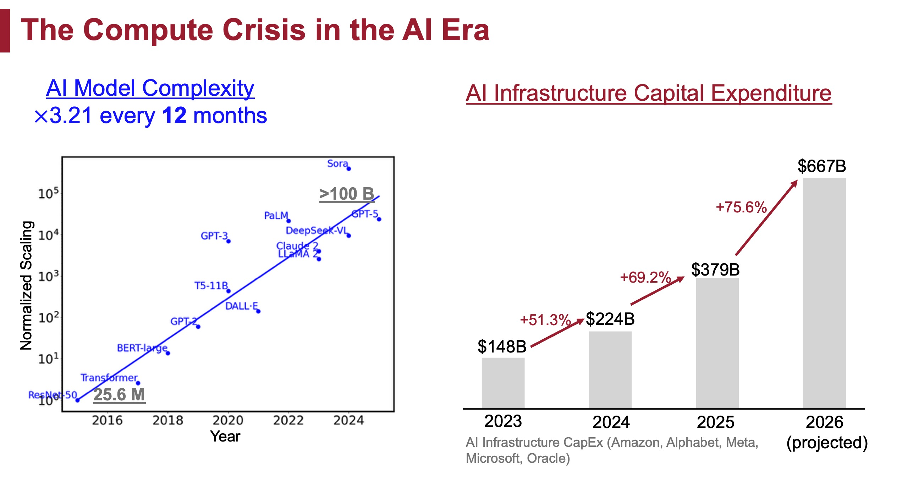
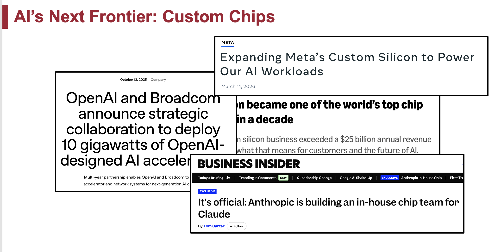
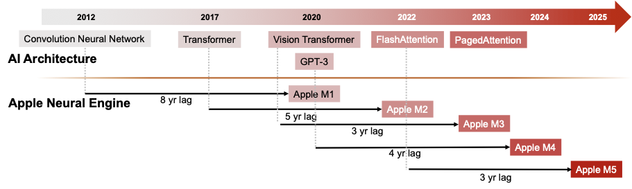
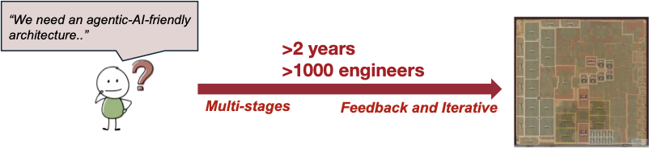
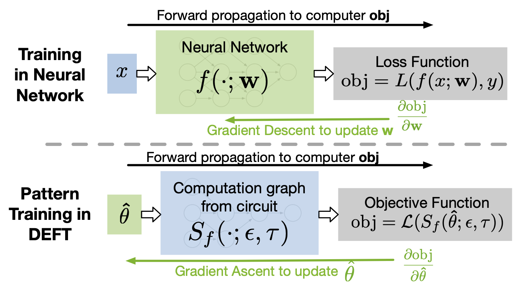
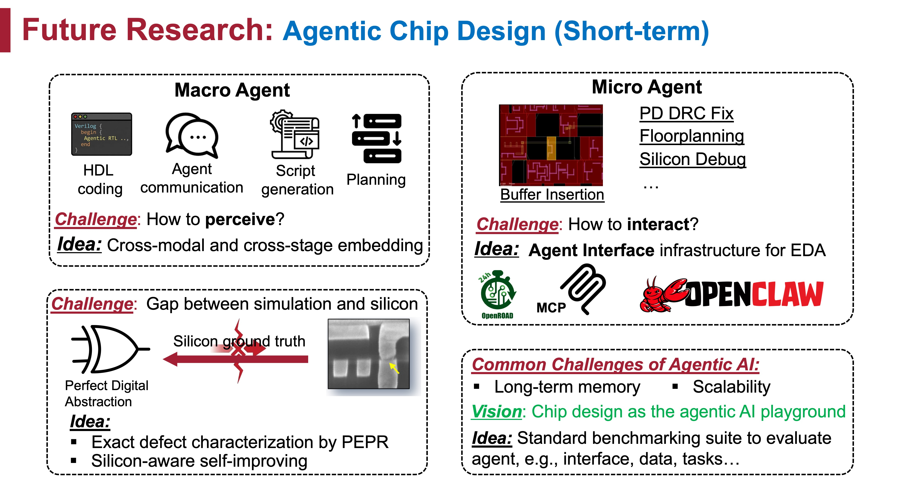

NUS - Wei Li is Hiring
I am an Assistant Professor in the School of Computing at the National University of Singapore (NUS). I am looking for self-motivated Ph.D. students, master's students, undergraduate researchers, and visiting students who are excited about EDA, hardware testing, AI, LLMs, and future hardware.
We are living at a rare moment: AI is driving unprecedented demand for computing, and hardware must learn to answer faster.
Contact: If you are interested in joining, please email me at weili3@nus.edu.sg with your CV, transcript if available, a short description of your research interests, and one or two projects or papers that made you curious.
Ph.D. application: Ph.D. admission is committee-based, but I strongly encourage interested students to contact me early. For very strong fit, I will actively support the application through the school process. Please also read the official NUS Computing Ph.D. application information. Applications are accepted year round and considered for the next nearest intake. Current cut-off dates are 15 December for the August intake and 15 June of the previous calendar year for the January intake.
Postdoc opening: I also have one 3-year postdoctoral position, co-advised with Prof. Tulika Mitra, Dean of NUS School of Computing. This is a great fit for someone interested in hardware/software co-design, AI systems, EDA, testing, or future computing systems.
Outline
- About Myself
- What Is My Research About?
- Research Directions: better solvers, autonomous EDA, robust AI hardware, and future hardware.
- What I Can Provide: industry path, academic path, and AI research bridges.
- My Advising Style: what I value and how we will work together.
- Who Should Reach Out?
- How to Contact Me
About Myself
I am an Assistant Professor in the School of Computing at the National University of Singapore. I received my Ph.D. from Carnegie Mellon University, advised by Prof. Shawn Blanton and Prof. Jose Moura. Before CMU, I received my B.Sc. and M.Phil. from The Chinese University of Hong Kong, advised by Prof. Bei Yu and Prof. Michael R. Lyu.
I was named a 2026 ML and Systems Rising Star, and received the Croucher Fellowship, Apple Ph.D. Fellowship in Integrated Systems twice, and the Qualcomm Innovation Fellowship. My work has received Best Paper Awards at ASP-DAC, ISSTA, and ICTAI, plus a Best Paper Honorable Mention at ICLAD.
My research sits at the intersection of design automation, hardware testing, and AI. In one sentence: I want to build intelligent design automation and testing systems that make chip development faster, more reliable (and maybe a little less soul-crushing).
What Is My Research About?
We are now in the era of AI. I am very excited about it. The demand for AI hardware is increasing rapidly, but hardware development is struggling to keep up with the speed of AI architecture evolution.

The pressure is no longer coming only from traditional semiconductor companies. The “new money” of AI—hyperscalers and frontier-model companies—is increasingly moving down the stack and building custom silicon for its own workloads. For example, Meta has developed and deployed its MTIA accelerators, while OpenAI and Broadcom have announced a collaboration to deploy OpenAI-designed AI accelerators. At the scale of modern AI, hardware specialized for the actual workload can improve performance, energy efficiency, and total cost. Chip design is therefore becoming a core strategic capability for AI companies, not just something purchased from the traditional semiconductor supply chain.

This makes faster and better chip design even more important. A custom accelerator is useful only if its design can keep pace with the models and systems it is meant to serve. If each new chip still takes years to develop, the hardware risks arriving for yesterday's AI. Faster solvers, more automated design flows, and tighter hardware-software co-design are becoming essential to making advanced AI scalable and affordable.

The basic reason is simple to say (and painful to live with): a modern chip can require years to move from an abstract specification to manufacturable silicon. The design problem is too complex to solve in one shot, so the industry divides it into many stages: architecture, RTL, verification, synthesis, floorplanning, placement, routing, timing closure, testing, diagnosis, and more. Divide-and-conquer is beautiful, but it also creates boundaries.
Engineers often discover violations late, only to realize that the fix belongs to an earlier stage. Communication across teams and stages can be measured in days or weeks. For the most ambitious chips, the timeline can be around two years and involve more than one thousand engineers when the target is optimal performance, power, and area (PPA).

My view is that we need a new paradigm for chip design. I am especially excited about four fronts:
- Better solvers for each stage: AI, algorithms, data structures, and optimization methods that improve core EDA tasks.
- New autonomous flows: LLM-based systems that accelerate the whole design cycle from human-in-the-loop iteration to human-on-the-loop automation.
- Robust AI hardware: testing, diagnosis, and runtime resilience when chips fail silently in large AI systems.
- Future hardware: design automation and testing for photonics, monolithic 3D, compute-in-memory, and whatever computing paradigm wins next.
The first two directions ask how to design chips faster. The third asks how to trust the chips after they enter real AI infrastructure. The fourth asks what happens when the substrate itself changes, from 2D silicon toward new computing fabrics.
The timing is almost unreasonable: the problems are hard, the industry needs answers, and the next generation of students can still leave fingerprints on the field (yes, I mean this quite seriously). Let us try to build something that people will remember.
Research Directions
1. Better Solvers for Each Stage
This direction is a good fit if you are interested in an industrial research path, and if you like optimization, AI, algorithms, data structures, or CS theory. Many EDA subproblems can be abstracted into beautiful mathematical problems. Generations of researchers have proposed elegant algorithms and data structures, from classical heuristics and analytical methods to specialized data structures such as dancing links for multiple patterning layout decomposition. This is why I fell in love with research as an undergraduate: the elegant algorithms you learned from textbooks can quietly live inside almost every electronic device you use every day (hard to imagine a more romantic job for an algorithm, right?).
A recurring challenge is the "impossible triangle" among quality, runtime, and generalizability. In recent years, new methods have become especially exciting: reinforcement learning and graph learning for AI4EDA, and differentiable programming for optimization problems that can be integrated naturally into deep learning toolkits and accelerated on AI hardware.

A nice feedback loop appears here: AI hardware accelerates AI-friendly EDA algorithms, and these algorithms can help produce better AI hardware (cool, right?). Related examples from my work include graph learning for layout decomposition, point-cloud learning for routing tree construction, and differentiable global routing.
2. Autonomous EDA Flows with LLMs
Advancing individual solvers is necessary, but not sufficient. Closing the gap between AI hardware demand and chip design capacity requires a paradigm shift in how the entire flow operates. Today, design flows involve repeated failure, rollback, script writing, debugging, and human coordination. LLMs create a new chance to automate script generation, RTL coding, verification assistance, design-space exploration, and flow management.
But chip design is not a normal software-agent playground. It is large-scale, multimodal, tool-heavy, and full of hard physical constraints. How can an LLM understand RTL text, graphs, layouts, timing reports, waveforms, tool logs, and design intent without getting lost? How should it plan, call tools, verify progress, and know when to ask humans for help?

I do not view LLMs only as an application to chip design. I view chip design as one of the best arenas for testing the real capability of LLM agents: the system is among the most complex artifacts humans build, and improvement can affect industry immediately. My recent BRIDGE work is one step in this direction: connecting graph-structured chip data with LLM reasoning. The rise of companies such as Ricursive Intelligence and Agentry also shows how hot this vision has become.
3. Robust AI Hardware and Silent Data Corruption
No product can be guaranteed flawless forever, and chips are no exception. With the explosive deployment of AI infrastructure, industry has observed a severe and unexpected failure mode: chips can pass production tests, enter datacenters, and later produce wrong results without warning. This is known as silent data corruption (SDC).
This problem has drawn major industrial attention; see, for example, Silent Data Corruption at Scale and Silent Data Corruption by 10x Test Escapes Threatens Reliable Computing. In my lab at CMU, we have been collaborating with multiple large technology companies and chip organizations on testing, diagnosis, and reliability.
Open questions include: if SDC is caused by escaped defects, why do those defects escape manufacturing test, and how can we detect more of them before shipping? If defects arise or become visible after deployment, how can AI systems become robust to them? Can we design cheap, efficient, and scalable in-field tests for new defects before they silently damage training or inference?
4. Hardware and Architecture for the Next Ten Years
From my internships, reading, and many conversations across industry and academia, one message keeps returning: traditional two-dimensional silicon scaling is no longer enough. If our ambitions include artificial general intelligence, world models, and embodied AI systems that act in the physical world, hardware may become the limiting wall.
There are many promising directions: photonics, quantum computing, compute-in-memory, 3D integration, and other post-von-Neumann computing paradigms. As someone trained in design automation and testing for silicon, I am excited by the chance to collaborate with researchers in these emerging areas and build new automation and testing frameworks for future hardware. If you happen to be interested in these fields, I am very happy to connect you with scholars working on them, for example Prof. Subhasish Mitra at Stanford for monolithic 3D and Zhengqi Gao for photonics.
My vision is always the same: no matter which future computing paradigm wins, it will need a serious framework for design automation and testing.
NUS is also a wonderful place for this direction, with strong architecture and systems faculty and a unique position between Asia and the global semiconductor ecosystem.
What I Can Provide
Industrial Path
I have close relationships with industrial EDA and testing teams, especially in the U.S. semiconductor ecosystem. I received Apple Ph.D. Fellowship support twice and the Qualcomm Innovation Fellowship, and I interned in core design automation research teams at Apple and NVIDIA. I also maintain active connections around testing and reliability with teams connected to Intel, Google, Broadcom, and others.
I also know founders and early members of new AI-for-chip-design startups, including Ricursive Intelligence and Agentry. I have referred and recommended several mentees and friends into related companies, and I will be very serious about helping my students find good internships, collaborators, and industrial impact when that is the path they want.
Academic Path
I also come from a strong EDA and testing academic lineage. My CMU advisors are Prof. Jose Moura, former IEEE President and a widely respected scholar, and Prof. Shawn Blanton, a leading researcher in hardware testing. My CUHK M.Phil. advisor Prof. Bei Yu is one of the most visible EDA researchers, with deep industrial impact. My thesis committee member, collaborator, and referee Prof. Subhasish Mitra at Stanford is a leading figure in resilient computing and future chip systems.
I have also learned from and collaborated with Prof. Michael R. Lyu, Prof. Lingming Zhang, Prof. David Pan, and many others. If you hope to continue in academia, I will do my best to help you build taste, publish strong work, meet the right people, and grow into an independent researcher.
This network is not limited to traditional EDA. I also have resources for students who want to do serious AI research, not only AI as a buzzword taped onto chips. For example, Zhengyang Geng, a good personal friend and a Ph.D. student at Carnegie Mellon University advised by Prof. Zico Kolter and working closely with Prof. Kaiming He, is one of the strongest young scholars I know on one-step generation. I see great opportunities to bring one-step generation into the chip world, and I am very happy to serve as a bridge between students in my group and these AI researchers.

My Advising Style
Why Your Advisor Matters
As your Ph.D. advisor, I will wear two hats: as a supervisor, I evaluate your progress toward the degree; as a mentor, I help you grow into the researcher and person you want to become. I will also promote you and your work, both during your Ph.D. and after you graduate. Once you graduate, I hope our relationship will evolve into one between colleagues (recommendation letters aside).
An advisor can have a lasting impact on your academic life, so you should choose one carefully. People sometimes compare choosing an advisor to choosing a spouse. The analogy is imperfect, but the underlying point is right: expertise matters, and so does whether you feel comfortable working with the person. Personality and communication fit are often underestimated. This section is here to help you decide whether my style is a good fit for you; you should also talk with current group members whenever possible.
By graduation, I hope my Ph.D. students will have grown into researchers who:
- Have a signature contribution. You should have one project, or a coherent body of work, that you understand deeply and that people associate with you.
- Can explain ideas clearly. You should be able to present your work to both a general audience and experts in your field.
- Are part of a research community. You do not need to be a celebrity, but researchers in your area should recognize your expertise and be happy to work with you. I will introduce you to people, but maintaining those relationships will be your responsibility.
- Can recover from setbacks. Rejection, revision, and resubmission are normal parts of research. I hope you will develop a sustainable way to regulate your emotions, make decisions, and form a philosophy of research and life that is genuinely your own. That, to me, is part of becoming a Doctor of Philosophy.
These are goals for graduation, not expectations at admission. I would be very happy to see you develop these abilities during your Ph.D.
How We Will Work Together: Common Questions
How should we communicate?
Directly, efficiently, and with basic courtesy (a quick “Hi” is always nice). If an issue is difficult or emotionally charged, I strongly encourage you to state your view explicitly. For example, if you are tired of a project, hints such as sighing, body language, or “maybe we should have more variety” may take me a long time to understand. Saying “I want to work on something else” gives us a much better chance to discuss the real problem and find a solution. You can disagree with me; I just need to know what you actually think.
What are regular meetings for?
We will normally meet once a week. Treat these meetings as opportunities to ask for advice, not as an obligation to prove that you have made progress. Skipping a meeting because you are stuck is usually counterproductive: the moment when you have made no progress may be exactly when my help is most useful. Bring unfinished ideas, confusing results, failed experiments, and questions—not only polished slides.
How do you think about projects?
When teaching duties are light, I will generally suggest keeping two projects active. This reduces the chance that one blocked project brings all momentum—and your morale—to a halt. Early in the Ph.D., I may suggest concrete, manageable projects so that you can learn the research process and, ideally, receive some early positive feedback through publication. Later, you should increasingly decide what you want your Ph.D. to be known for. That choice will shape your dissertation, your research identity, and often your career direction, so I expect you to take ownership of it and go deep.
Do you encourage internships?
Yes—strongly. In AI and chip research, I believe that experience in industry is far more valuable than spending every summer in the lab. I will encourage you to pursue internships and actively help you compete for good opportunities, including recommending you through my professional connections when appropriate.
An internship can provide useful income during your Ph.D. and make research possible with data, computing resources, tools, or infrastructure that only industry can offer. Just as importantly, it can help you understand how industry currently solves problems, which needs are genuinely urgent, and how industrial teams work. It also gives you the chance to build professional relationships that belong to you, independent of your advisor's network. If you learn to notice and make good use of these opportunities, you will naturally be developing into the kind of excellent researcher I hope my students will become.
Do I need to worry about funding?
For students supported by the NUS Research Scholarship, the standard first four years of funding are provided through the university. If a fifth year becomes necessary, I will take responsibility for working to secure appropriate support. Finding funding is my responsibility, not yours.
What are your expectations for graduation?
Beyond the formal School requirements, such as completing teaching duties and passing the qualifying examination, I do not want to define graduation by a rigid publication count. A hard numerical target can push students toward optimizing for quantity rather than quality, which I believe is harmful to long-term career development. The more important test is this: when you enter the job market, whether in industry or academia, people should recognize your signature work and know that you have done something excellent in a particular area.
I also understand that students often want a quantitative reference point for judging their progress. If we absolutely must translate my expectations into a number, three substantial first-author papers would normally represent a solid body of work for an NUS Computing Ph.D. Again, quality matters much more than quantity. One pioneering or genuinely influential paper may already demonstrate more than several conventional publications, and I would consider that accordingly rather than counting papers mechanically.
How long should the Ph.D. take?
In NUS Computing, a Ph.D. commonly takes around five years. If you meet the graduation expectations above earlier, I will be happy to support an earlier graduation. However, except in truly exceptional cases, I would not encourage graduating in fewer than four years solely because a publication count has been reached. I do not want a short timeline to reward research that is merely easier to publish at the expense of work that could have real impact on industry, the research community, or society.
I am still early in my career and have limited formal advising experience. This description is partly a commitment to the kind of mentor I will work to become. Many ideas here were inspired by Favonia's advising statement, with which I strongly agree.
Who Should Reach Out?
You do not need to already know EDA (and please do not be scared by these terms!). Some of my favorite students are people who arrive from AI, algorithms, systems, or architecture, then discover that chips are an absurdly good playground for their taste (including me: my undergraduate major was computer science, and I knew almost nothing about EDA or testing before I started research). TBH, I even believe chips are one of the most promising directions from a very practical point of view (great industry jobs, faculty opportunities, and, if we are lucky and stubborn enough, a real chance to leave your name somewhere in the history of computing). What matters most is curiosity, discipline, and the courage to work on problems that are larger than one person.
How to Contact Me
If you are interested, please email me at weili3@nus.edu.sg. A helpful email includes your CV, transcript if available, a short description of your research interests, and one or two projects or papers that made you curious. You can also mention whether you are looking for Ph.D. admission, master's research, undergraduate research, or a visiting opportunity.
We are still early. The map is not finished (that is exactly why it is a good time to join).